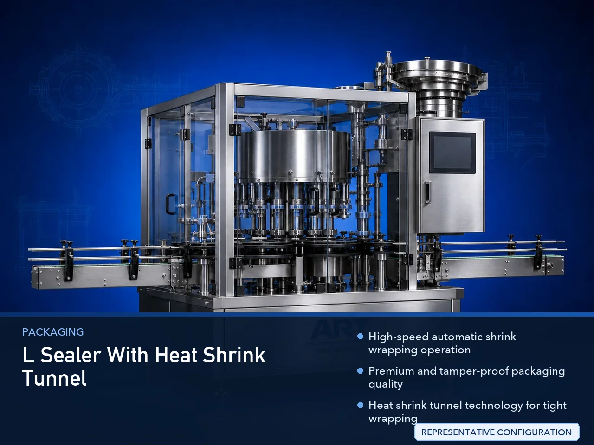

Automatic Sealer with Heat Shrink Tunnel Machine (Bottle & Container Shrink Wrapping System)
An Automatic Sealer with Heat Shrink Tunnel Machine, also known as a Shrink Wrapping Machine, Heat Tunnel Packaging Machine, Automatic L-Sealer with Shrink Tunnel, or Container Shrink Packaging System, is an advanced industrial packaging solution designed for automatic product feeding, film…

About the L Sealer With Heat Shrink Tunnel
Shrink wrapping systems are widely used for: ✔ Bottle shrink wrapping ✔ Jar shrink packaging ✔ Multipack bottle wrapping ✔ Tamper-proof retail packaging ✔ Cosmetic product shrink wrapping ✔ Food container wrapping ✔ FMCG packaging operations ✔ Industrial protective packaging
The machine improves: ✔ Packaging appearance ✔ Product protection ✔ Tamper-proof packaging security ✔ Dust and moisture protection ✔ Bundle packaging stability ✔ Production efficiency ✔ Retail shelf presentation
Industrial automatic sealer with heat shrink tunnel machines use: ✔ Automatic film feeding systems ✔ Servo synchronized sealing systems ✔ PLC and HMI automation controls ✔ Heat shrink tunnel technology ✔ Conveyor synchronized handling systems
to automatically seal and shrink wrap containers with superior packaging finish and high production efficiency.
Automatic shrink wrapping systems are widely used in industries such as:
Beverage industries Food processing industries Cosmetic industries Pharmaceutical industries Chemical industries Personal care industries Retail packaging industries FMCG industries
where premium packaging appearance, tamper-proof protection, and high-speed production are essential.
The machine is highly suitable for: ✔ Bottle shrink packaging ✔ Jar shrink wrapping ✔ Retail multipack packaging ✔ Cosmetic product wrapping ✔ Food container packaging ✔ Industrial protective wrapping
ART Mechatronics offers high-performance automatic sealer with heat shrink tunnel machines, engineered for continuous industrial operation, precision shrink wrapping performance, premium packaging quality, and reliable long-term packaging automation.
Working Principle of Automatic Sealer With Heat Shrink Tunnel Machine
- 1. Product Feeding Containers are automatically fed into sealing section through synchronized conveyor systems.
- 2. Film Wrapping & Sealing Process Machine automatically wraps products with shrink film and seals the film using heat sealing systems.
Servo synchronization ensures accurate film alignment and smooth product handling.
- 3. Shrink Wrapping Operation Machine handles: ✔ PET bottles ✔ Glass jars ✔ Cosmetic bottles ✔ Food containers ✔ Beverage bottles ✔ Multipack products ✔ Retail packaging products
accurately and continuously.
- 4. Heat Shrink Tunnel Process Products pass through controlled heat tunnel where film shrinks tightly around products.
Machine performs: Heat shrinking Film tightening Tamper-proof sealing Protective wrapping Bundle stabilization for premium packaging appearance and secure product protection.
- 5. Inspection & Automation Integration Optional systems include: Batch coding Date printing Vision inspection systems Film alignment detection Reject systems
- 6. Finished Product Discharge Shrink wrapped products discharged automatically for: Cartoning Case packing Warehouse storage Retail distribution Export shipment handling
Types of Automatic Shrink Wrapping Machines
- 1. Bottle Shrink Wrapping Machine Designed for: ✔ Beverage and liquid bottle packaging applications
- 2. Jar & Container Shrink Packaging Machine Suitable for: ✔ Food and FMCG packaging systems
- 3. Multipack Shrink Wrapping Machine Uses: ✔ Retail and bulk packaging systems
- 4. L-Sealer with Heat Tunnel Machine Designed for: ✔ High-speed industrial shrink packaging operations
- 5. Servo Driven Shrink Wrapping Machine Suitable for: ✔ Precision high-speed wrapping operations
- 6. Fully Automatic Shrink Packaging System Designed for: ✔ Complete industrial packaging automation lines
Industries Using Automatic Shrink Wrapping Machines
🥤 Beverage Industry Water bottles, juices, soft drinks, and beverage multipack packaging systems. 🍅 Food Processing Industry Sauces, syrups, edible oils, and food container shrink packaging systems. 🧴 Cosmetic & Personal Care Industry Perfumes, lotions, shampoos, and cosmetic packaging systems. 💊 Pharmaceutical Industry Medicine bottles and healthcare packaging protection systems. ⚗️ Chemical Industry Industrial liquids and protective container packaging systems. 🛒 FMCG Industry Consumer product and premium retail packaging systems.
Features & Advantages
✔ High-speed automatic shrink wrapping operation ✔ Premium and tamper-proof packaging quality ✔ Heat shrink tunnel technology for tight wrapping ✔ PLC and servo automation control systems ✔ Improves product appearance and packaging safety ✔ Reduces manual wrapping dependency ✔ Supports multiple container sizes and formats ✔ Reliable long-term industrial performance ✔ Smooth and continuous packaging line integration
Technical Highlights
Machine Type: Automatic sealer with heat shrink tunnel machine Industrial shrink wrapping system Heat tunnel packaging machine Container Type: PET bottles Glass jars Cosmetic containers Food packaging containers Retail multipack products Wrapping Integration: Film wrapping systems Heat sealing systems Shrink tunnel systems Tamper-proof packaging systems Features: PLC control system Servo synchronization Touchscreen HMI Automatic film feeding systems Temperature controlled heat tunnel Applications: Beverages Food products Cosmetic products Pharmaceutical products Retail packaging Industrial packaging Automation: Semi-automatic Fully automatic industrial systems
Turnkey Shrink Wrapping Solutions
ART Mechatronics offers: Complete shrink wrapping systems Automatic heat tunnel packaging solutions Packaging automation integration systems Conveyor synchronization systems Installation & commissioning After-sales service & AMC
Why Choose Art Mechatronics
Expertise in industrial packaging and automation systems Customized shrink packaging solutions for multiple industries High-performance and precision wrapping technology Advanced PLC and servo automation systems Proven industrial packaging performance across sectors
Applications
Beverage Manufacturing Plants Food Processing Industries Cosmetic Packaging Facilities Pharmaceutical Packaging Units Retail Packaging Industries FMCG Packaging Industries
Get pricing & specs for the L Sealer With Heat Shrink Tunnel
Share the product, target capacity, current process and plant location. These details help our engineers discuss the right machine or line configuration.
One partner, from design to start-up
ART Mechatronics designs, manufactures, installs and commissions your L Sealer With Heat Shrink Tunnel solution with regional presence in India, UAE and Thailand.